یک اعتراف قبل از شروع
این ارائه را کامل
با AI نوشتم.
این ارائه را کامل با AI نوشتم.
نه! واقعاً خودم نوشتم :))
ولی وقتی جمله اول را شنیدین، چه حسی داشتین؟
ما داریم اینجا زحمت میکشیم!
۰۱ / حس ما
چرا وقتی میشنویم چیزی با AI ساخته شده، حسمون عوض میشه؟
این حس از کجا میاد؟
چرا برامون مهمه؟
۰۱ / حس ما
چرا از اسلاپها خوشمون نمیاد؟
AI slop؛ بعداً برمیگردیم سراغ توهم دانایی و توانایی
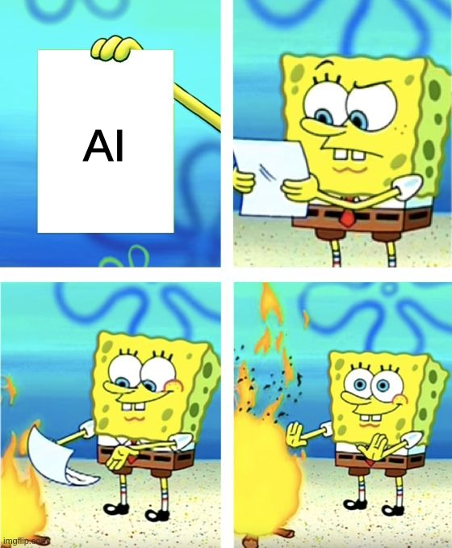
رودمپ
امروز قراره
از این مسیر بریم.
- داستانچی شد به این ارائه رسیدم؟
- ابزارایجنت چیه و چطور تنظیمش کنیم؟
- تجربههکاتون، دمو و خروجی
- قضاوتخط قرمزها، تیم و هزینه
۰۲ / داستان randomProject
چند ماه پیش در randomProject
من داشتم بیل میزدم!
چرا بیل میزدم؟
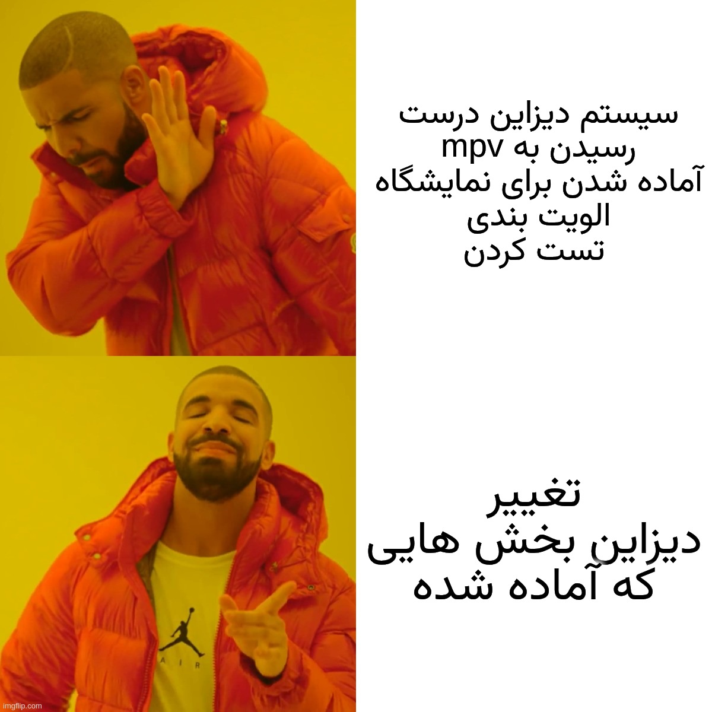
randomProject AI
نقطه صفر و
هدف اولیه
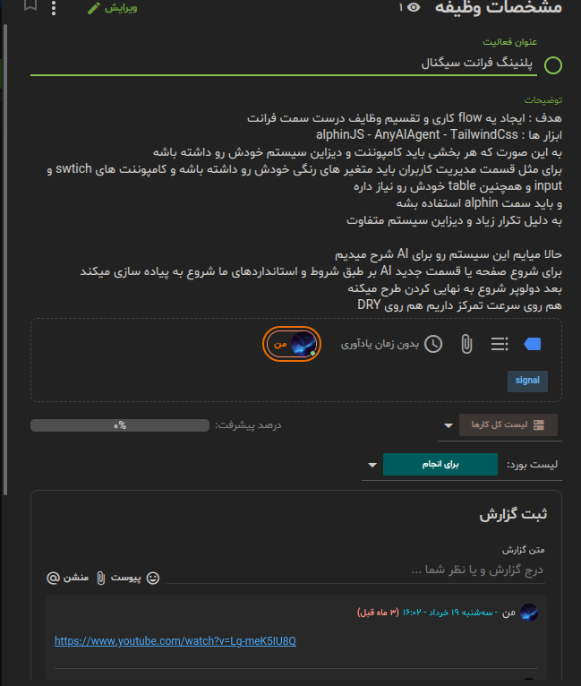
۰۳ / ایجنتها
بریم ببینیم
ایجنت چیه!
چند نکته درباره ایجنتها
piیه حالت از صفر نوشتن داره.
OpenCodeیه setup کامل داره.
Cursor / Claude Codeخیلی باهاشون ارتباط نگرفتم.
Live Demo
بریم یه
تست بگیریم!
چهار چیزی که باید ببینیم
Instruction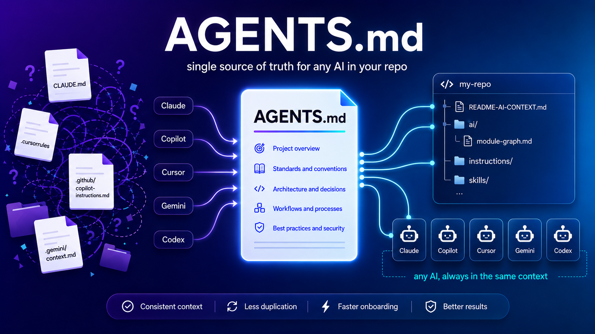
Skill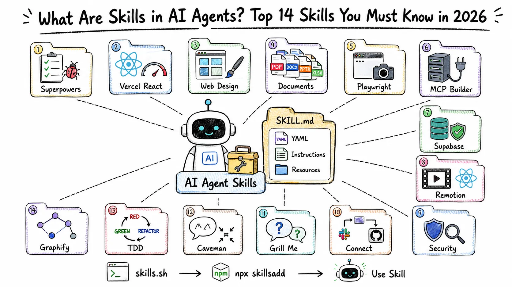
Loop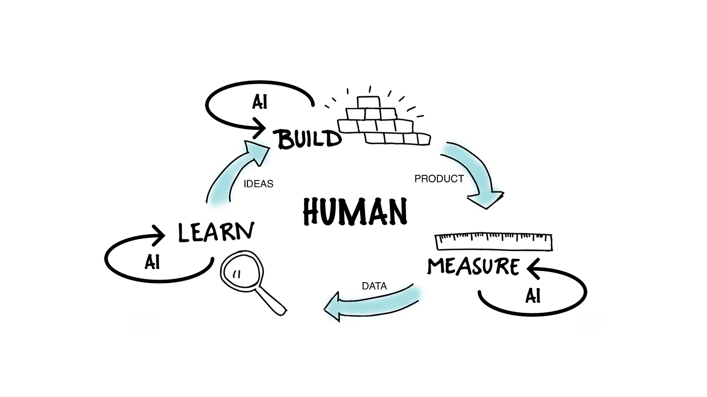
OpenSpec
۰۴ / تجربه
هکاتون لیارا:
از Spec تا خروجی
این بار مسیر ساخت رو میبینیم.
Spec → Output
مسئله را قبل از کد
قابل تقسیم کردیم.
۱مسئله
۲Spec اولیه
۳تقسیم کار
۴انسان + ایجنت
۵خروجی
یک Spec، چند مسیر
تفاوت گروهها فقط
در مدل نبود.
Context
تقسیم مسئله
Review انسانی
احسان اگه نکتهای داره…
Breakpoint 02 · پنج دقیقه
اگر ایجنت مرورگر، ترمینال و سرویسها را کنترل کند، کجا باید از ما اجازه بگیرد؟
یه مرز مشخص تعریف کنید؛ «همیشه» و «هیچوقت» جواب کافی نیست.
05:00
AI کجا تصمیم میگیره؟
فرض کن میخوایم یه
URL Shortener بسازیم.
اگه فقط همین رو بگیم، AI چه تصمیمهایی رو بهجای ما میگیره؟
داده حساس
تغییر غیرقابلبازگشت
ادعای بدون منبع
مسئولیت انسانی
Timeout
Expire شدن لینک
Permission
تصمیم رندوم
سرعت×نبود کنترل=بدهی سریعتر
AI کیفیت تیم را چند برابر میکند؛
یا سرعت تولید بدهی فنی را.
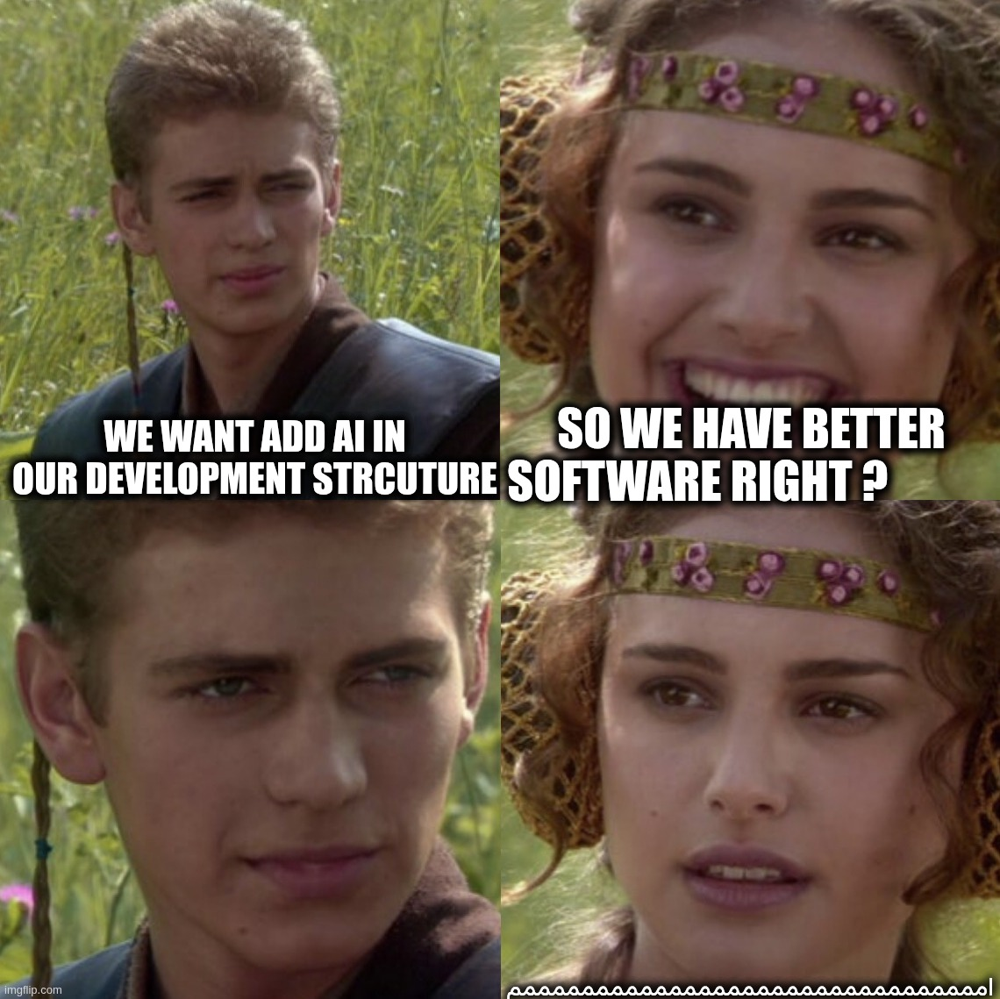
توهم توانایی و دانایی
خروجی شبیه کارِ یه آدم آگاهه؛
ولی این یعنی ما هم فهمیدیم؟
توهم فهمممکنه نفهمیم موفقیت از دانش ما اومده یا قدرت ابزار.
Dunning–Krugerدانش کم، تشخیص نادانی خودمون رو سخت میکنه.
Automation Biasمعمولاً بیشتر از چیزی که باید به سیستم خودکار اعتماد میکنیم.
مثال: AI یه قرارداد تجاری پیچیده میسازه؛ ولی شاید نتونیم خطاهای حقوقی پنهانش رو پیدا کنیم.
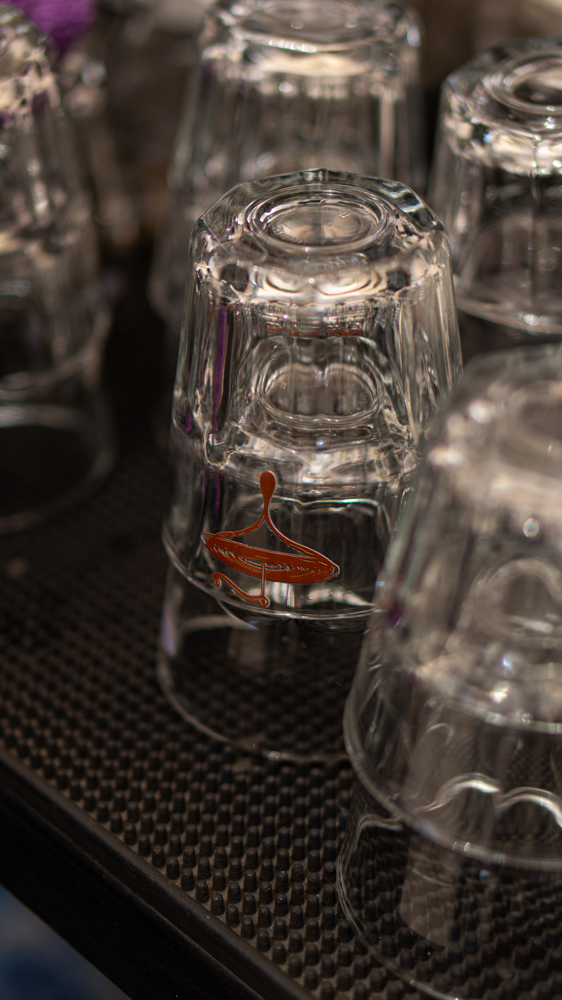
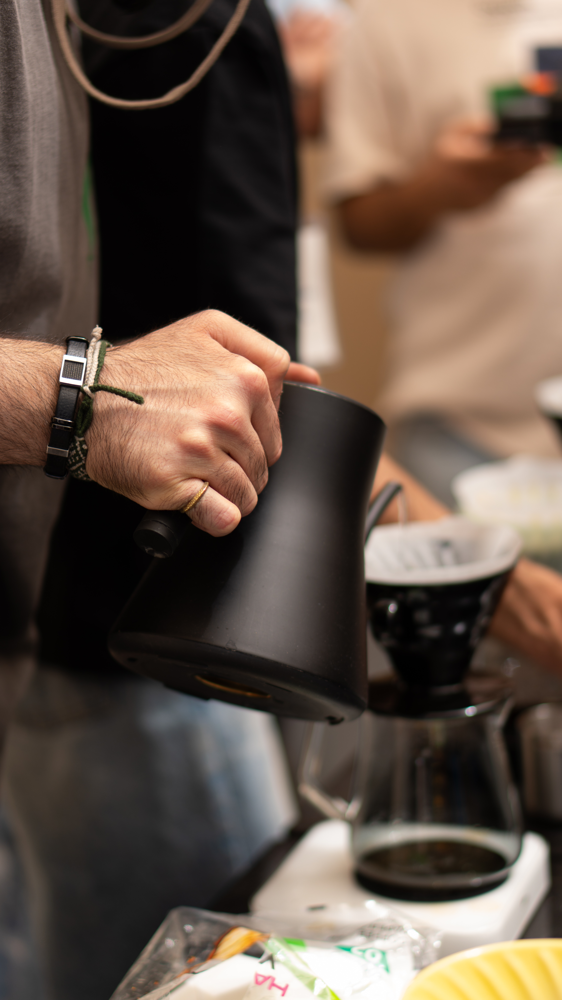
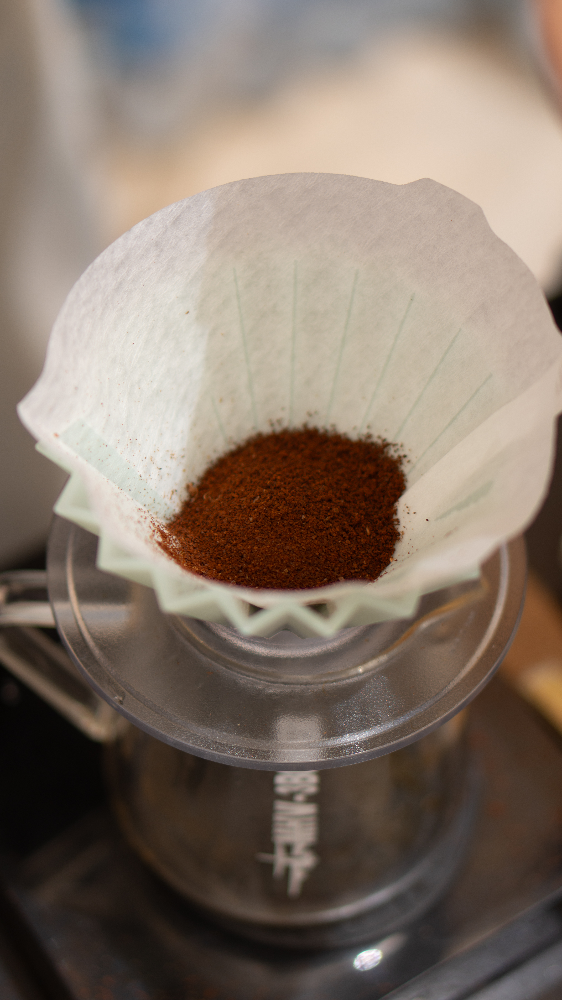
Coffee + Questions · سی دقیقه
فردا توی تیم خودتون، AI رو دقیقاً در کدوم مرحله امتحان میکنید؟
یه کار واقعی و کوچیک انتخاب کنید.
30:00
۰۶ / مدلها
مدلهایی که
روی میز داریم
gpt5.6.sol
sunnet5
opus5
glm5.2
qwen3.7max
تجربه همین هکاتون
برای کدنویسی سنگین،
Subscription همیشه کافی نبود.
LIMITLIMITLIMIT
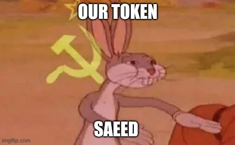
Token Budget
Context بیشتر، رایگان نیست.
Contextاطلاعات بیشتر
Costمصرف بیشتر
Latencyزمان بیشتر
Skill و context دقیق کمک میکنند اطلاعات درست را بدهیم؛ نه اینکه کل دنیا را وارد prompt کنیم.
استراتژی پیشنهادی
ساختار را خودت بشکن.
۱ مسئله و زیرمسئلهها را خودت تعریف کن.
۲ برای هر بخش از AI کمک بگیر.
۳ هر تصمیم و خروجی را بفهم و review کن.
AI برای ایدهگرفتن عالی است، اما…
کدنویسی میتواند با AI باشد؛
تصمیم پروژه با من است.
+18
خب، حالا که همهچیز را گفتیم…
F*CK AI!
نه ابزار؛ Hype و استفاده بیفکر.
DON'T OUTSOURCE LEARNING
یادگیری را
به AI واگذار نکن.
- کدی را که نمیفهمی تحویل نده.
- تصمیمها را خودت توضیح بده.
- بدون AI هم بتوانی debug کنی.
- هر خروجی را تست کن.
HYPE ≠ PROGRESS
درگیر Hype نشو.
ابزارها عوض میشوند؛ درک مسئله، قضاوت و توان دیباگ میماند.
AI←برای تو کار میکند
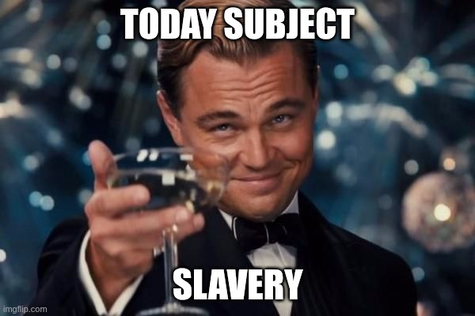
PLAN B
اینطوری جایگزین نمیشیم :))
شدیم هم مهم نیست؛
پلن جایگزینم آمادهست.
یک قدم بعدی
هدف کمتر فکرکردن نیست؛
هدف، فکرکردن به مسئله درست است.
این هفته یک کار کوچک، واقعی و قابلاندازهگیری را با ایجنت امتحان کنید.
قدم بعدیابزارها رو بخونیم و
برای خودمون تنظیم کنیم.
picustomize for your workflow
OpenCodecustomize for your team
Skills & Rulesshape them around real usage
ابزار آماده قرار نیست دقیقاً مناسب تیم ما باشه؛ باید طبق استفاده خودمون کاستومش کنیم.
شماره ویدئو رو بزن تا همینجا preview بشه.